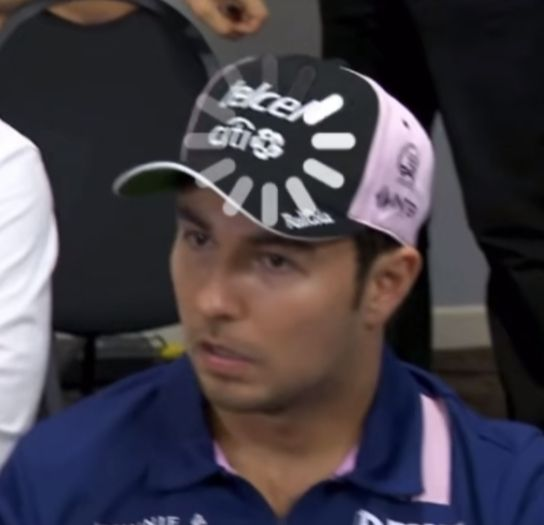
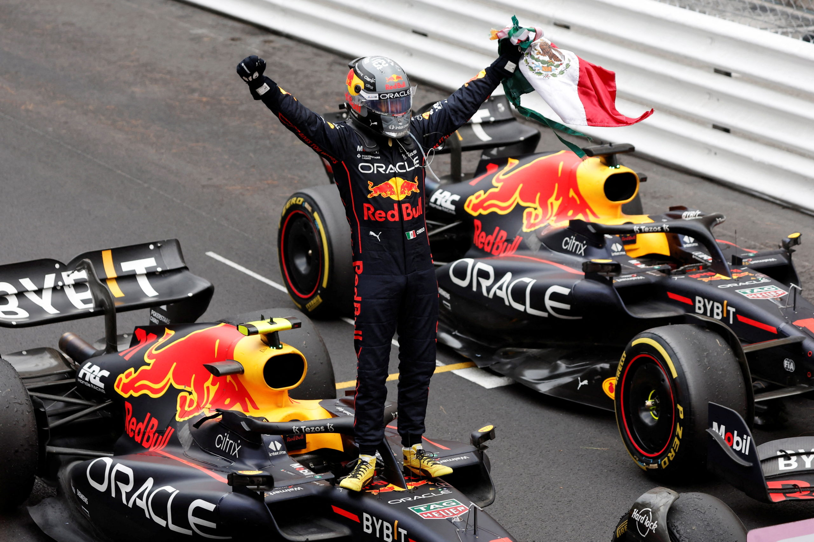

Biographie
Er ist der Kämpfer mit der sanften Berührung aus dem Land der Lucha Libre.
Perez' Ruf in der Formel 1 beruht auf gegensätzlichen Ansätzen im Grand-Prix-Rennsport.
Auf der einen Seite ist er ein schlagkräftiger Kämpfer, der sich durch das Feld und in die Punkte kämpft.
Er scheut sich nie, seinen Begegnungen auf der Strecke ein wenig Würze zu verleihen, und selbst seine Teamkollegen entkommen der Hitze des Mexikaners nicht immer.
Auf der anderen Seite ist Perez ein geschmeidiger Fahrer, ein Meister im Umgang mit den Reifen, um zusätzliche Leistung herauszuholen und ihm die Oberhand bei der Strategie zu geben.
Nach seiner Zeit bei Sauber, McLaren, Force India und Racing Point ein klarer Favorit in der Startaufstellung, ist Perez zu einem analytischen Rennfahrer und Teamplayer gereift.
Der Revolverheld aus Guadalajara ist stolzer Landsmann und hat mehr Punkte gesammelt als jeder andere Mexikaner in der Geschichte der Formel 1.
In Sakhir 2020 zog er ebenfalls mit seinem Helden und Landsmann Pedro Rodriguez gleich, indem er als Erster die Zielflagge sah – eine Leistung, die ihm einen Platz bei Titelanwärter Red Bull einbrachte.
Dort spielte er eine unterstützende Rolle bei Max Verstappens Meisterschaftskampagnen 2021/22/23 und fügte seiner persönlichen Bilanz fünf weitere Siege hinzu.
Sein eigener Titelkampf ist vielleicht nicht sicher, vor allem mit Verstappen als Teamkollege, aber Perez arbeitet hart und fährt mit seinem Herzen.

